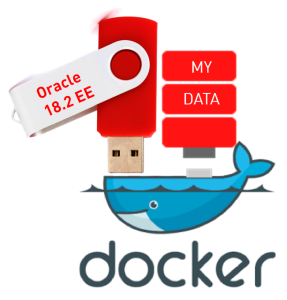

|
|
This was first published on https://blog.dbi-services.com/some-ideas-about-oracle-database-on-docker (2018-05-08)
Republishing here for new followers. The content is related to the the versions available at the publication date
This is not a ‘best practice’ but just some ideas about building Docker images to provide an Oracle Database. I started with the images provided by Oracle: https://github.com/oracle/docker-images/tree/master/OracleDatabase/SingleInstance and this is great to validate the docker environment. Then I customized for my needs and here are the different points about this customization.
I work by iteration. Sending a 3GB context each time I try a build is a no-go for me. Then I quickly stopped to put the Oracle installation .zip in the context of my build. I already blogged about this.
There are several ways to avoid to send a big context, such as having the .zip in an NFS or HTTP server and ADD it or RUN wget from there. I prefer to build one small container with this .zip that I’ll use later
In my current directory I have the linuxx64_12201_database.zip which I explicitly send to the context with this .dockerignore:
* !linuxx64_12201_database.zip
And I build a franck/oracle122/zip image with it:
FROM oraclelinux:7-slim ADD linuxx64_12201_database.zip /var/tmp
When done, I’ll not have to send the context again and I will build my container from this one with another Dockerfile:
FROM franck/oracle122/zip RUN yum -y install oracle-database-server-12cR2-preinstall unzip tar wget openssl vi && rm -rf /var/cache/yum
In the same idea, I build another intermediate image with the yum install above. The reason is that once I have it, I don’t need internet access anymore. I did that before boarding for an 8 hours flight. I build the above Dockerfile as franck/oracle122/prereq while on airport wifi and will use it later as the base for the final Dockerfile:
.dockerignore:
*Dockerfile:
FROM franck/oracle122/prereq # then follow all the work which do not need large context or internet connection ...
Even if you are not on a plane, it is always good to avoid internet access. You probably had to get some doors opened in the firewall in order to pull the base image. Now that you have it, you should keep it. Or one day, the security team will close the door again and you will waste a few hours. That also means that you do not start with a :latest image but with a specific version.
The Dockerfile provided by Oracle starts with all ENV and a COPY to add all scripts into the container. The problem is that each time you want to change a script, the build has to start from this step. And then the long operations have to be done again: unzip, install,…
I have a small context here (only the scripts and configuration files) but I ADD or COPY them only when needed. For example, here, a modification in install.rsp will re-do the runInstaller step, but the unzip one will not have to be done again because the cache is re-used:
WORKDIR /var/tmp RUN unzip linuxx64_12201_database.zip COPY install.rsp /var/tmp RUN ./database/runInstaller -silent -force -waitforcompletion -responsefile /var/tmp/install.rsp -ignoresysprereqs -ignoreprereq ; true
The script that will run the container is added only at the end so that I can modify and re-build quickly without re-doing the previous steps.
VOLUME ["/opt/oracle/pdbs"]
EXPOSE 1521 5500
COPY docker_cmd.sh /opt/oracle
CMD exec /opt/oracle/docker_cmd.sh ${CDB} ${PDB
Another step that I do at the end is removing the files I do not need in the container. Because that’s a guess and try approach and I want to build quickly. Of course, this may not be optimized for the size of all those layers, but I can reduce the final image later. The main feature of Docker build are the layers and I use them to develop the Dockerfile without wasting my time. For the waste of storage, I use ZFS with block level Cow, dedup and compression. For the final image, I’ll –squash it.
The detail will probably go into a future blog post. But, as soon as runInstaller is done, and latest bundle patch applied, you can remove a lot of directories that I do not need anymore:
rm -rf $ORACLE_HOME/inventory $ORACLE_HOME/.patch_storage
As soon as the database has been created with DBCA, I do not need the DBCA templates anymore:
rm -rf $ORACLE_HOME/assistants
As this container will run only the instance, I can remove:
rm -rf $ORACLE_HOME/sqldeveloper $ORACLE_HOME/suptools $ORACLE_HOME/jdk
And depending on the options I will provide in the database, I remove the big ones:
rm -rf $ORACLE_HOME/apex $ORACLE_HOME/javavm $ORACLE_HOME/md
There is also a lot to remove from $ORACLE_HOME/lib (I need only a few *.so* that I can determine with strace, perf, lsof, ldd) and from $ORACLE_HOME/bin (basically, I need oracle, tnslsnr, lsnrctl, and sqlplus). Those are executables and you can strip them to reduce the size further. Definitely remove the last relink ones renamed as oracleO, …
Those are just examples, your list will depend on your version and usage, but this may reduce the image to 1GB or less. Of course, this is not supported. But the goal is to provide a small development database. Not an reliable and efficient one for production.
An Oracle Database is full of large files that are updated sparsely. Just forget about OVERLAY and OVERLAY2 which copies the whole file to the new layer when you update a single byte of a file. I do not consider BTRFS seriously. In my opinion, ZFS is the only filesystem to consider for storing Docker images with large files. Enforce deduplication and compression to overcome the inflation of layering and the ignorance of sparse files. I think that recordsize=32k is a good idea from what I’ve seen about how docker applies writes to layers. More detail in a future blog post.
Note that layering issues are not only for build efficiency but also for container run. You will see that I put some datafiles in the image. Then, at database open, some blocks are changed (at least the headers) and I do not want a full file copy to the runnable layer. Block level CoW is required for that.
The container is the place to store all the software, and most of CDB$ROOT and PDB$SEED is part of the software distribution. This is what takes time when creating a database (catalog, catproc,…) and I definitely refuse to give a container to a developer where he will have to wait 10 minutes at run because the database has to be created on the external volume. A ‘docker run’ must be fast. And the external volume must contain only the data that has to be persisted, not 500MB of dbms_% package code, which will be all the same for all containers from the same image.
This means that I create the CDB during the build:
RUN /opt/oracle/product/12.2.0.1/dbhome_1/bin/dbca -silent -createDatabase -templateName General_Purpose.dbc -gdbName ${CDB} -sid ${CDB} -initParams db_unique_name=${CDB},service_names=${CDB},shared_pool_size=600M,local_listener='(DESCRIPTION=(ADDRESS=(PROTOCOL=tcp)(HOST=0.0.0.0)(PORT=1521)))' -createAsContainerDatabase true -numberOfPdbs 0 -sysPassword oracle -systemPassword oracle -emConfiguration NONE -datafileDestination /opt/oracle/oradata -recoveryAreaDestination /opt/oracle/fast_recovery_area -recoveryAreaSize 1024 -storageType FS -sampleSchema false -automaticMemoryManagement false -totalMemory 1024 -databaseType OLTP -enableArchive false -redoLogFileSize 10 -useLocalUndoForPDBs true -createListener LISTENER:1521 -useOMF true -dbOptions OMS:false,JSERVER:false,SPATIAL:false,IMEDIA:false,ORACLE_TEXT:false,SAMPLE_SCHEMA:false,CWMLITE:false,DV:false,APEX:false
RUN rm -rf /opt/oracle/product/12.2.0.1/dbhome_1/assistants/dbca/*
No PDB here, as the PDB will be created at ‘docker run’ time into the external volume. I use a template with datafiles here, but I may prefer to run the whole creation to control the creation. I may even hack some .bsq and .sql files in RDBMS admin to reduce the size. I’m in archivelog mode here because I want to allow to flashback the PDB. The container is ephemeral. If it becomes too large (archive logs, audit, …) just remove it and start another one. Or add a script to remove the old ones (those not required by guarantee restore points).
The PDB is the only thing that must be persistent, and controlled by the developer. I create it with the following in my docker_cmd.sh (which is called from the Dockerfile CMD line providing CDB name and PDB name as arguments) script:
create pluggable database $2 admin user admin identified by oracle create_file_dest='/opt/oracle/pdbs';
alter pluggable database $2 open;
show pdbs
The PDB is bound to the external volume ( VOLUME [“/opt/oracle/pdbs”] ) thanks to 12.2 CREATE_FILE_DEST clause so that the developer can create datafiles only there. Then the ‘docker run’ is fast as a clone of PDB$SEED.
The developer will connect only to the PDB. He has nothing to do in CDB$ROOT. If there is a need to change something in CDB$ROOT, I’ll provide a new image. I may even define lockdown profiles rules to limit the PDB and define a listener where only the PDB registers.
When the developer stops the container, I want to leave something consistent in the external volume. The way to do that quickly is a PDB unplug. An unplug to a PDB archive (a .pdb zip with all datafiles) would be nicer, but that takes too much time to create. I unplug to a .xml file. This is what I do on stop (SIGTERM and SIGSTOP):
alter pluggable database all close;
column pdb_name format a30
select pdb_id,pdb_name,status from dba_pdbs;
begin
for c in (select pdb_name from dba_pdbs where pdb_id>2) loop
dbms_output.put_line('-- Unpluging '||c.pdb_name);
execute immediate 'alter pluggable database "'||c.pdb_name||'" unplug into ''/opt/oracle/pdbs/'||c.pdb_name||'.xml''';
end loop;
for c in (select pdb_name from dba_pdbs where pdb_id>2 and status='UNPLUGGED') loop
dbms_output.put_line('-- Dropping '||c.pdb_name);
execute immediate 'drop pluggable database "'||c.pdb_name||'" keep datafiles';
end loop;
end;
/
-- All pluggable databases have been unplugged:
host ls /opt/oracle/pdbs/*.xml
-- Shutdown the CDB:
shutdown immediate;
-- You can plug those PDBs by passing the volume to a new container
The script iterates on all PDBs but I see no reason to create more than one. I unplug the PDB and drop it, and then shutdown the instance. We need the unplug to be completed before the stop timeout. The container may be killed before the drop or shutdown, but as long as we have the .xml we can plug the PDB into a new container.
I mentioned earlier that at start I create the pluggable database mentioned by ${PDB}. But this is only when there is no /opt/oracle/pdbs/${PDB}.xml If this file is found, this means that we provide a PDB that was unplugged by a previous container stop. Actually, when the start detects this file, the following will be run:
whenever sqlerror exit failure;
create pluggable database "${PDB}" using '/opt/oracle/pdbs/${PDB}.xml';
host rm /opt/oracle/pdbs/${PDB}.xml
alter pluggable database "${PDB}" open;
select message from pdb_plug_in_violations;
Finally, because I may start a container which has a newer Release Update than the one which unplugged my PDB, I run:
$ORACLE_HOME/OPatch/datapatch
My scripts process all PDBs but I think that in most cases we need to have a one-to-one relationship between the container and the PDB. The idea is to provide a database that is ready to use and where no administration/troubleshooting is required. The key here is to keep it simple. If you need to provide a large CDB with several PDBs, then Docker is not the solution to your problem. A virtual machine is a better answer for that.
The image build provided by Oracle stores the persistent configuration files with the database, in the external volume, through symbolic links from ?/dbs. But with my design, I don’t need to. The configuration of the instance, running in the container, is within the container. The passwords for SYS is in the container. Then SPfile and password files stay in the container. The runnable image is not read-only. It is writeable. We can write here as long as the changes do not have to persist beyond the container end of life.
The ‘scope=spfile’ parameters that can be modified by the developer will be PDB parameters. They are persisted because they go to the .xml file at unplug. Only in case of crash, without a clean unplug, those parameters may be stored only in the container. That’s a special case. A crashed container is not dead and jsut waits to be re-started.
There’s one big flaw with my CDB-in-container/PDB-in-volume design. The whole database datafiles must be consistent, are checkpointed together, and are all protected by the same redo stream, which is located in the container. But what’s the real problem about that? If the container is cleanly stopped, the PDB is unplugged and there is a clear separation between my external volume and the container. And both are consistent.
However, if the container crashes, the datafiles in my external volume are fuzzy and need recovery. This cannot be done without the CDB files which are on the container. This has only one consequence: the user must know that if the container was not cleanly stopped, she will need to start the PDB with the same container. I don’t think this is a real problem. I just ensure that the user gets the warning (a big README file in the external volume for example, created at start and removed at clean stop) and that the container will always be able to recover (no 100% full filesystem at start – anyway I have some log cleanups at start).
My startup script handle 3 situations. The first one is the first start after creation of the container. This creates the pluggable database. The second one is the re-start after a clean stop. This plugs the existing pluggable database. The third one is crash-recovery after a kill. This just runs the automatic instance recovery.
Then the startup script will run in a loop, either tailing the alert.log or displaying some status info every minutes.
But before all of that, the startup script must handle the termination signals.
The clean stop is handled by the following signals:
trap 'shutdown SIGINT' SIGINT trap 'shutdown SIGTERM' SIGTERM trap 'shutdown EXIT' 0SIGINT is for ^C when running the container, SIGTERM is when ‘docker stop’, and the signal 0 is when the container exits by itself. This can happen when my ‘tail -f’ on alert log is killed for example. All of them call my shutdown() procedure which is trying a clean stop (unplug the PDBs).
When the stop timout is expired or when we do a ‘docker kill’, there’s no time for that. The only thing I do here before a shutdown abort is an ‘alter system checkpoint’ to try to reduce the recovery needed. And display a WARNING message saying that the container that was killed must not be removed but be re-started asap to recover the PDB in the external volume. Maybe explicitly name the container and the command to re-start.
I do that with an abort() function called by the following:
trap 'abort SIGKILL' SIGKILL
The kill -9 of the instance, or container crash, cannot be handled. Recovery is needed as for the SIGKILL one. Here is the reason for keeping a permanent README file near the PDB to explain that the container which crashed should be restarted as soon as possible to recover this.
This is not a recipe of how to build an Oracle Database Docker image, but just some ideas. The most important is to know the requirement. If you provide Oracle on Docker just because the developers want that, the solution will probably be wrong: too large, too long, inefficient, and too complex,… They will not use it and they will tell everybody that Oracle is not cool because it cannot be dockerized.  With my PDB-in-volume / CDB-in-container design, I have :
Think of them as 2 USB sticks, one with the software (binaries and packages), and one with the data (user metadata and data). When plugged together on the same container, it runs one version of software with one state of data. If the container crashes, you just run it again without unplugging any of the sticks. When you are done with your test or development iteration, you stop the container and remove it. Then you have unplugged the sticks to run another combination of data and software.
{kind=link}